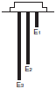
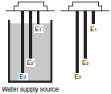
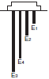
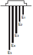
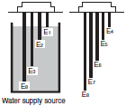
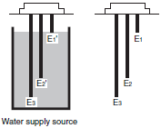
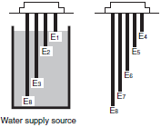
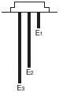
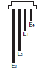
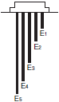

Level Switches
|
|
Features |
|
|
|
| Engineering Data |
|
|
|
Troubleshooting |
Basic Concepts
Any problems with the 61F can be categorized into one of three areas. (See diagram on below.)
To find out which area is causing the problem, simulate a change in water level by using a clip or a piece of wire to create a short circuit between the electrodes. By closing and opening the circuit you can compare it with normal operating behavior. (Do not short circuit the power supply terminals.)
For example, for the 61F-GN, check that the electrodes are not submerged in water, then see what happens when terminals E1 to E3 are short circuited. Check that it resets when the short circuit is removed. If there are no problems, then conduct the same test at the terminals of the Electrode Holder, thereby finding the problematic section by process of elimination.
Flowcharts
Water Supply Control Troubleshooting
| Situation | Items to check | Cause and Solution | ||
| [1] Pump does not start. | 1. Is power applied to the contact and power supply terminals? 2. Is the power supply (same phase) connected to one end of the magnetic contact switch coil and S0 terminal of 61F? 3. Are the contact and power supply terminals screwed on properly? 4. Is the motor protection relay activated? 5. Are the electrodes in the table below touching each other, in contact with the tank or tangled with any objects? | 1. Check the fuse and no-fuse breakers. 2. Check that the wiring of the output relay and the magnetic contact coil is correct. 3. If it is loose, tighten it. 4. If it has operated, remove the cause and reset. 5. Install it correctly and if there is something tangled on it, remove it. 6. If there is a fault, replace the wires. 7. If long wires are needed, use a longdistance Level Controller (61F- []NL(-[]L) 2 km or 4 km). If the interference is due to inductance, use shielded wires or change the wiring. | ||
| 61F-GN(G), 61F-G1N(G1) | 61F-G3N(G3) | 61F-G4N(G4) | ||
| E1 to E3 or E2 to E3 | E2 to E5 or E3 to E5 | E5 to E8 or E6 to E8 | ||
| 6. Are there insulation problems with wiring of any of the following electrode circuits? | ||||
| 61F-GN(G), 61F-G1N(G1) | 61F-G3N(G3) | 61F-G4N(G4) | ||
| E1, E2 circuits | E2, E3 circuits | E5, E6 circuits | ||
| 7. With a long lead wire to the electrodes (between electrode holder and 61F), is there any interference from electrostatic capacitance or electromagnetic inductance? | ||||
| [2] Pump does not stop. | If the Level Controller stops when terminals of the following are short circuited, the problem could be any from 1 to 6. | 1. Put it in properly and tighten if loose. 2. Replace if faulty. Tighten terminal screws. 3. If there are lime deposits or grease, it will not conduct well, so remove it and clean. 4. If the electrodes are too far apart, the inter-electrode resistance becomes too high and 61F will not operate properly. 5. If the specific resistance is high, replace with a high-sensitivity Level Controller (61F-[]NH (-[]H).) 6. If tape is wrapped around for protection, leave at least 10 cm of the end uncovered. | ||
| 61F-GN(G), 61F-G1N(G1) | 61F-G3N(G3) | 61F-G4N(G4) | ||
| E1 to E3 terminals | E2 to E5 terminals | E5 to E8 terminals | ||
| E1* | E2* | E5* | ||
| 1. Have any of the electrodes marked with * fallen Off or becoming loose? 2. Are any of the electrode lead wires marked with * disconnected or have loose terminal screws? 3. Are there any lime deposits or grease on the electrodes? 4. Is the distance between the electrodes appropriate? 5. Is the specific resistance of the liquid (water) too high? 6. Is tape wrapped around the electrodes right to the end? | ||||
| [3] Rattles when stopping. | 1. Have any of the electrodes marked with the * fallen off or becoming loose? 2. Are any of the electrode circuits lead wires marked with * disconnected or have loose terminal screws? | If electrodes marked with * are not working properly, it becomes a single point control and switches the device ON, OFF with just a small amount of variation in water level. | ||
| 61F-GN(G), 61F-G1N(G1) | 61F-G3N(G3) | 61F-G4N(G4) | ||
| E2* | E3* | E6* | ||
| 3. Is there a mistake with the wiring of the electrodes shown in the following table? | ||||
| 61F-GN(G), 61F-G1N(G1) | 61F-G3N(G3) | 61F-G4N(G4) | ||
| E1 to E3 | E1 to E5 | E4 to E8 | ||
Note 1.For devices with idling prevention function, check the items listed in Water Supply Control (with Idling Prevention) Troubleshooting as well.
Note 2.For devices with full tank and water shortage alarm, refer to Troubleshooting for Full Tank and Water Shortage Alarms.
Note 3.When using a Level Controller for water supply control and it has a water shortage alarm, if the buzzer sounds but the pump doesn't start when the Level Controller is turned ON, check the water level.
If the water level is not reaching electrode E4, this phenomenon is the correct outcome for a water shortage alarm.
To start the pump in this state, create a short circuit between the electrode circuits E4 and E3 until the water level reaches electrode E4.
Re-check the alarm water level and the length of electrode E4.
Type of Electrodes
| 61F-GN(G) | 61F-G1N(G1) | 61F-G3N(G3) | 61F-G4N(G4) | |
 | Situation 1 Automatic water supply with pump idling prevention  | Situation 2 Automatic water supply with water shortage alarm  |  |  |
For connection details, refer to the datasheets of 61F-G[]N, 61F-G[], 61-GP-N[], 61F-G[]P, and 61F-UHS/-HSL.
Water Supply Control (with Idling Prevention) Troubleshooting
For devices with idling prevention 61F-G1N (G1)/-G4N (G4), conduct the following checks as well.
| Situation | Items to check | Cause and Solution |
| [1] Pump does not start. | ・ Is the idling prevention circuit activated? Make sure that electrodes E1, E2 and E3 are not too short. (Check E1' and E2' When using 61F-G1N (G1).) 1. Check the water level of the water supply source. Does the water level reach E2 (E1')? 2. Are either of the electrode E2, E3 (E1', E2') lead wires broken? Are any of the screws of E2, E3 (E3', E2') loose? | ・ Unless it is conductive between E2 (E1' when using 61F-G1N/G1) and E8 (E3) when the Level Controller is turned ON, and between E3 (E2') and E8 (E3) after it has been turned ON, the idling prevention function operates and the motor will not move. 1. If the water level is not reaching electrode E2 (E1') when the Level Controller is turned ON, create a short circuit between E2 and E8 (E1' and E3) momentarily to start the motor. |
| [2] Idling prevention function is not working. | 1. Are any of the electrodes E2 and E8 or E3 and E8 (E1' and E3 or E2' and E3) touching, in contact with the tank, or tangled with any objects? 2. Are there any insulation problems with the lead wires of electrodes E2 or E3 (E1' or E2')? 3. Is the Level Controller malfunctioning because of the long lead wires? | 1. Install it properly and if there is something tangled on it, remove it. 2. If the wires are faulty, replace them. 3. If long wires are needed, use a long-distance Level Controller. If the interference is due to inductance, use shielded wires or change the wiring. |
Note:Items in the parentheses are for the 61F-G1N (G1).
Type of Electrodes
| 61F-G1N(G1) | 61F-G4N(G4) |
 |  |
For connection details, refer to the datasheets of 61F-G[]N, 61F-G[], and 61F-G[]P.
Drainage Control Troubleshooting
| Situation | Items to check | Cause and Solution | |
| [1] Pump does not start. | 1. Is power applied to the contact and power supply terminals? 2. Is the power supply (same phase) connected to one end of the magnetic contact switch coil and S0 terminal of 61F? 3. Are the contact and power supply terminals screwed on properly? 4. Is the motor protection relay activated? ・ If the device starts when terminals shown in the following table are short circuited, the problem could be any one from 5 to 10. | 1. Check the fuse and no-fuse breakers. 2. Check that the wiring of the output relay and the magnetic contact coil is correct. 3. If it is loose, tighten it. 4. If it is active, remove the cause and reset. 5. Install it correctly and if there is something tangled on it, remove it. 6. Replace if faulty. Tighten terminal screws. 7. If there is lime deposits or grease, it will not conduct well, so remove it and clean. 8. If the electrodes are too far apart, the interelectrode resistance becomes too high and 61F will not operate properly. 9. If the specific resistance is high, replace with a high-sensitivity Level Controller (61F- NH (-[]H).) 10. If tape is wrapped around for protection, leave at least 10 cm of the end uncovered. | |
| 61F-GN(G), 61F-G2N(G2) | 61F-G3N(G3) | ||
| Between electrodes E1 and E3 | Between electrodes E2 and E5 | ||
| E1* | E2* | ||
| 5. Are any of the electrode circuits lead wires marked with * in the above table disconnected or have loose terminal screws? 7. Are there any lime deposits or grease on the electrodes? 8. Is the distance between the electrodes appropriate? 9. Is the specific resistance of the liquid (water) too high? 10. Is tape wrapped around the electrodes right to the end? | |||
| [2] Pump does not stop. | 1. Are the electrodes in the table below touching each other, in contact with the tank or tangled with any objects? | 1. Install it correctly and if there is something tangled on it, remove it. 2. If there is a fault, replace the wires. 3. If long wires are needed, use a long- distance Level Controller (61F-[]NL(-[]L) 2 km or 4 km). If the interference is due to inductance, use shielded wires or change the wiring. | |
| 61F-GN(G), 61F-G2N(G2) | 61F-G3N(G3) | ||
| Between E1 and E3 or E2 and E3 | Between E2 and E5 or E3 and E5 | ||
| 2. Are there any insulation problems with the lead wires of any of the following electrodes? | |||
| 61F-GN(G), 61F-G2N(G2) | 61F-G3N(G3) | ||
| E1, E2 circuits | E2, E3 circuits | ||
| 3. With a long lead wire to the electrodes (between electrode holder and 61F), is there any interference from electrostatic capacitance or electromagnetic inductance? | |||
| [3] Rattles when starting. | 61F-GN(G), 61F-G2N(G2) | 61F-G3N(G3) | If electrodes marked with * are not working properly, it becomes a single point control and switches the device ON, OFF with just a small amount of variation in water level. |
| E2* | E3* | ||
| 1. Are any of the electrodes marked with * fallen off or coming loose? 2. Are any of the electrode circuits lead wires marked with * in the above table disconnected or have loose terminal screws? 3. Are the contactor or 61F terminals screws coming loose? 4. Is there a mistake with the wiring of the electrodes shown in the following table? | |||
Note:For devices with full tank and water shortage alarm, refer to Troubleshooting for Full Tank and Water Shortage Alarms.
Type of Electrodes
| 61F-GN(G) | 61F-G2N(G2) | 61F-G3N(G3) |
 |  |  |
For connection details, refer to the datasheets of 61F-G[]N, 61F-G[], 61-GP-N[], 61F-G[]P, and 61F-UHS/-HSL.
Troubleshooting for Full Tank and Water Shortage Alarms
The following table provides specific check points for each model for various problems and check items.
| Situation | Items to check | 61F-G1N(G1) | 61F-G2N(G2) | 61F-G3N(G3) | 64F-G1N(G4) |
| [1] Full tank alarm sounds when the tank is not full. | 1. Are the electrodes touching each other, in contact with the tank, or tangled with any objects? 2. Are there insulation problems with the wiring of any of the following electrode circuits? ・ With long leads to the electrodes (between electrode holders and the 61F), is there any interference from electrostatic capacitance or electromagnetic inductance? | --- | 1. E4 and other electrodes * 2. E4 | 1. E1 and other electrodes * 2. E1 | Elevated tank 1. E4 and other electrodes * 2. E4 |
| Water supply source 1. E1 and other electrodes * 2. E1 | |||||
| [2] There is a shortage of water but the alarm does not sound. | 1. E4 and E3 2. E4 | --- | 1. E4 and E5 2. E4 | Elevated tank 1. E7 and E8 2. E7 | |
| Water supply source 1. E3 and E8 2. E3 | |||||
| [3] The tank is full but the alarm does not sound. | ・ If shorting the terminals listed under 1 for each 61F model restored normal operation, then the problem is one the following. 2. Are any of the electrodes that have fallen off or come loose? 3. Are any of the electrode leads disconnected or have any of the terminals listed under 4 for each 61F model come loose? ・ Are there any lime deposits or grease on the electrodes? ・ Are the electrodes too far apart? ・ Is the specific resistance of the liquid (water) too high? ・ Is tape wrapped around the electrodes right to the end? | --- | 1. E4 and E3 2. E4 3. E4 4. E4, E3 | 1. E1 and E5 2. E1 3. E1 4. E1, E5 | Elevated tank 1. E4 and E8 2. E4 3. E4 4. E1, E8 |
| Water supply source 1. E1 and E8 2. E1 3. E1 4. E1, E8 | |||||
| [4] Water shortage alarm sounds when there is no shortage. | 1. E1' (E4) and E3 2. E4 3. E4 4. E1' (E4), E3 | --- | 1. E4 and E5 2. E4 3. E4 4. E4, E5 | Elevated tank 1. E7 and E8 2. E7 3. E7 4. E7, E8 | |
| Water supply source 1. E3 and E8 2. E3 3. E3 4. E3, E8 |
* Even if the alarm electrode has no contact with the common electrode, it becomes conductive when it can come into contact with any other electrodes when the water level rises.
Inspecting the Electrode Circuits
If the electrodes cannot be withdrawn to test the electrode circuit, a tester can be used to measure the resistance between the electrode and ground, as shown in the diagram on the right. The measured resistance value indicates the length, contact condition, and mounting condition of the electrode.
For example, the sequence of electrodes ordered from low measured resistance to high is E3 (long), E2 (medium), and E1 (short).
Follow the guidelines below to use this test method.
(1)Detach the leads from the 61F.
(2)Measure the conducting status with the tank full.
(The water level must be at E1 or higher.)
(3)Measure the insulating status with the tank empty.
(The water level must be at E2 or lower.)
Measuring the Resistance between Electrodes
Measure the resistance between the electrodes if the wiring is correct but the 61F does not operate. Measure with a voltmeter using the voltage drop method, as shown on the right.
The resistance between electrodes (resistance of liquid between E1 and E3) is given by the following equation.
R: Resistance of liquid between electrodes (kΩ)
V: Voltmeter indicated voltage (V)
I: Ammeter indicated current (mA)
Select the 61F model according to the R (resistance) value.
Inspecting the 61F-11N Relay Unit
Apply the specified power supply voltage with the Relay Units connected to the 61F. Refer to the connection diagrams (internal wiring diagrams) and short the 61F ground terminal to the operating terminal of each Relay Unit. Check the operation of the relay output contacts with a tester. With the 61F-11, the indicator will be lit when the Relay Unit operates.